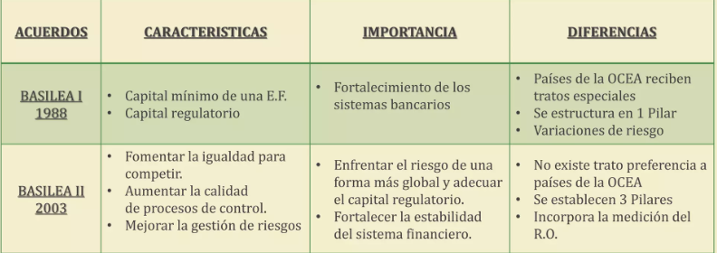
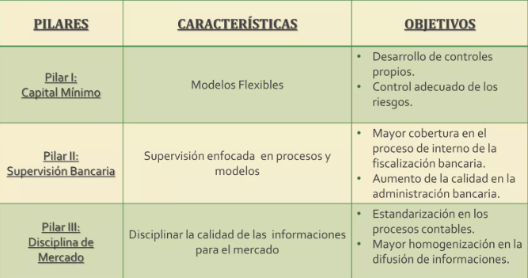
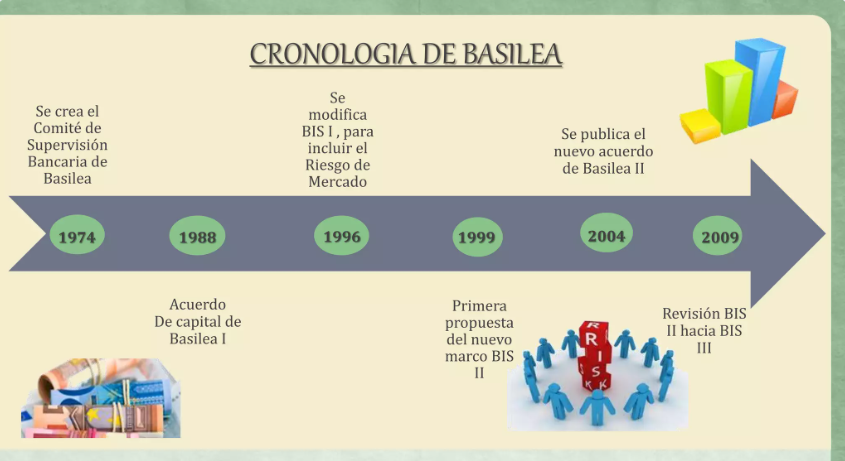
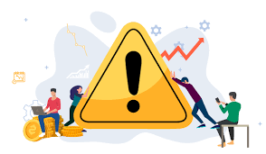
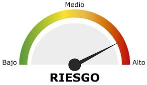

Historia de la normativa en Administración de riesgos
Laura Rodriguez Corona, Arturo Amanenchekua, Fernando Solana Prieto , Natalia Arrez Flores, Tania Lopez Gallardo, Hector Mejia Sanchez
Casos prácticos y origen histórico de la administración de riesgos.
Introducción al Riesgo y su Relación con las Finanzas.
La palabra riesgo proviene del latín risicare, que significa atreverse o transitar por un sendero peligroso. En los procesos de toma de decisiones y especialmente en los de inversión, el riesgo es una parte inevitable. El beneficio de cualquier decisión o acción está asociado al riesgo inherente a dicha decisión. En el ámbito financiero, el riesgo se refiere a las pérdidas potenciales que pueden ocurrir en un portafolio de inversión.
La administración de riesgos se centra en medir las probabilidades de pérdida bajo incertidumbre. Aunque el estudio formal del riesgo surgió en el Renacimiento, el riesgo ha sido parte de la vida humana desde siempre. La medición del riesgo en el ámbito financiero ha evolucionado con el tiempo, apoyada por los avances en la teoría de la probabilidad y el desarrollo de modelos matemáticos.
Teoría de la Probabilidad
Los primeros estudios serios sobre la probabilidad comenzaron en el siglo XVI. Algunas figuras clave incluyen:
Girolamo Cardano (1500-1571): Analizó la probabilidad en juegos de azar, plasmando sus ideas en Liber de Ludo Aleae.
Galileo Galilei (1564-1642): Publicó Sopra le Scoperte dei Dadi, en el que analizó combinaciones posibles en juegos de dados.
Desarrollo de la teoría de la probabilidad
Posteriormente otros contribuyeron al desarrollo de la teoría de la probabilidad, como:
Blas Pascal y Pierre de Fermat: Utilizaron conceptos algebraicos y geométricos para el análisis de probabilidades.
Abraham de Moivre (1667-1754): Propuso la distribución normal y el concepto de desviación estándar.
Daniel Bernoulli (1700-1782): Desarrolló un enfoque racional para la toma de decisiones basadas en probabilidad, iniciando la teoría de juegos.
Thomas Bayes (1702-1761): Desarrolló el teorema de Bayes, integrando nueva información en decisiones.
Francis Galton (1822-1911): Descubrió la regresión a la media, esencial en la dinámica de los precios de mercado.
Evolución de la Administración de Riesgos y Teoría de Portafolios
En el siglo XX, la teoría de portafolios dio un gran paso con el trabajo de Harry Markowitz (1927-2023). En 1959, Markowitz propuso que al añadir activos a un portafolio, el riesgo, medido por la desviación estándar, disminuye debido a la diversificación. También introdujo los conceptos de covarianza y correlación, donde la correlación negativa entre activos reduce el riesgo del portafolio.
En 1973, Fisher Black y Myron Scholes desarrollaron una fórmula para valuar opciones financieras, facilitando la medición del riesgo asociado a este tipo de instrumentos. JP Morgan, en 1994, introdujo el concepto de “Valor en Riesgo” (VaR), un modelo que cuantifica los riesgos de mercado para portafolios con múltiples instrumentos financieros.
Desastres Históricos en la Administración de Riesgos
El entorno volátil y la falta de técnicas efectivas para medir las pérdidas potenciales han causado grandes desastres financieros, entre los cuales destacan:
Nick Leeson (1995): Operador de derivados en el banco Baring, cuyas pérdidas llevaron a la quiebra del banco con más de 1300 millones de dólares en pérdidas.
Bob Citron (1994): Tesorero del condado de Orange, EE.UU., perdió más de 1700 millones de dólares debido a inversiones riesgosas.
Thoside Iguchi (1995): Operador de Daiwa Bank, que perdió 1100 millones de dólares en el mercado de dinero.
Crisis del Peso Mexicano (1994): La devaluación del peso expuso la fragilidad del sistema financiero, resultando en grandes pérdidas en todas las instituciones financieras
Segundo tema.
Normativas internacionales como Basilea I, II y III
Basilea I
Acuerdo publicado en 1988, en Basilea, Suiza. El Comité de Basilea, compuesto por los gobernadores de los bancos centrales de Alemania, Bélgica, Canadá, España, EE. UU., Francia, Italia, Japón, Luxemburgo, Holanda, el Reino Unido, Suecia y Suiza

Basilea II
En 2003, después de varias publicaciones y ajustes, el Comité de Basilea publicó la versión del Nuevo Acuerdo de Capital, conocido como Basilea II, que tenía como propósito “contribuir a la estabilidad financiera de los bancos a través de mejoras en la medición y gestión de sus riesgos

Cronologia de Basilea

Introducción a Basilea III y Antecedentes
Basilea III es un conjunto de medidas internacionales desarrolladas por el Comité de Supervisión Bancaria de Basilea en respuesta a la crisis financiera de 2007-2009. Su objetivo principal es reforzar la regulación, supervisión y gestión de riesgos en los bancos con actividad internacional. Estas medidas buscan que los bancos puedan absorber pérdidas y evitar crisis sistémicas, las cuales fueron comunes durante la crisis mencionada. La interdependencia entre bancos y la falta de solvencia generaron una crisis de confianza y un riesgo sistémico, llevando a la intervención de los reguladores internacionales para coordinar una respuesta. Basilea III no reemplaza completamente a Basilea I y II, sino que las complementa, poniendo especial atención al riesgo de pánico bancario (“bank run”). Para abordarlo, Basilea III introduce nuevos requerimientos de capital según el tipo de depósito y préstamo.

Primer Pilar de Basilea III – Capital y Cobertura del Riesgo
Capital: Calidad y Nivel del Capital Basilea III exige un incremento del capital ordinario hasta el 4.5% de los activos ponderados por riesgo, con deducciones pertinentes. El Capital Tier 1 (que incluye acciones comunes, utilidades retenidas y otras participaciones) pasa del 4% al 6%, dividido en un 4.5% de CET1 y un 1.5% adicional de AT1. Además, introduce un colchón de conservación del capital de 2.5%, elevando el total de capital al 7%. También añade un colchón anticíclico de hasta 2.5% para evitar riesgos sistémicos derivados del crecimiento excesivo del crédito.
Cobertura del Riesgo Se revisan los métodos para calcular el riesgo de crédito, mercado, y operacional, mejorando la sensibilidad y comparabilidad. También se introducen mayores restricciones para las titulizaciones y las exposiciones al sector financiero, además de un suelo de capital revisado basado en los métodos estándar.
Contención del Apalancamiento Basilea III impone un coeficiente de apalancamiento no inferior al 3%, calculado como la división del Capital Tier 1 por una exposición total no ponderada por riesgo. Este coeficiente busca evitar la acumulación de apalancamiento.
Segundo Pilar – Gestión y Supervisión del Riesgo
El Segundo Pilar de Basilea III se enfoca en la gobernanza y gestión de riesgos de las entidades bancarias. Esto incluye la supervisión de exposiciones fuera de balance, actividades de titulización, prácticas retributivas y pruebas de tensión. También abarca la implementación de sólidas prácticas de valoración y supervisión a nivel corporativo. Riesgo de Tasas de Interés en la Cartera de Inversión (IRRBB) Basilea III introduce orientaciones para gestionar el riesgo de tasas de interés, con requisitos de divulgación mejorados y un método estándar actualizado para identificar bancos atípicos. La correcta gestión de este riesgo es esencial para asegurar que los bancos mantengan balances sólidos frente a cambios en las tasas de interés, evitando pérdidas que puedan comprometer su solvencia.
Tercer Pilar y Estándares de Liquidez
Disciplina de Mercado El Tercer Pilar de Basilea III introduce requisitos de divulgación para aumentar la transparencia en los bancos. Incluye un marco consolidado para divulgar los parámetros prudenciales clave, mejorando la confianza del mercado.
liquidez Se establecen estándares internacionales de liquidez para fortalecer la capacidad de los bancos de enfrentar crisis de financiación. El Coeficiente de Cobertura de Liquidez (LCR) exige mantener suficientes activos líquidos de alta calidad para resistir escenarios de tensión por 30 días. El Coeficiente de Financiación Estable Neta (NSFR), a largo plazo, cubre todo el balance del banco y busca reducir desajustes de liquidez incentivando fuentes estables de financiación. El marco de seguimiento supervisor ayuda a los reguladores a identificar tendencias del riesgo de liquidez a nivel sistémico, evaluando la capacidad de los bancos para manejar sus obligaciones diarias y a largo plazo.
Tercer tema
Origen y explicación de Riskmetrics y su relación con Basilea
Cuarto tema
Origen y explicación de Creditmetrics y su relación con Basilea.
Introducción a CreditMetrics.
CreditMetrics es una metodología desarrollada por JP Morgan en 1997, diseñada para cuantificar el riesgo crediticio en una cartera de instrumentos financieros. Su objetivo principal es modelar las posibles pérdidas resultantes de cambios en la calidad crediticia de los emisores de deuda, como los movimientos en las calificaciones (por ejemplo, de AAA a BB). Este enfoque captura no solo el riesgo de incumplimiento, sino también las probabilidades de que los emisores cambien entre distintas categorías de riesgo crediticio.
Antes de CreditMetrics, los bancos se basaban en métodos más simples, que generalmente solo medían la probabilidad de default o incumplimiento. CreditMetrics introdujo un enfoque más amplio, considerando las transiciones entre diversas calificaciones crediticias.

Origen de CreditMetrics
CreditMetrics representó una innovación significativa en la gestión de riesgos financieros, en particular para las instituciones financieras que necesitaban medir y gestionar su exposición al riesgo crediticio. Este método permitió a los bancos ir más allá del análisis simple de incumplimiento, integrando la probabilidad de que los emisores de deuda transiten entre varias categorías de calificación.
Las agencias calificadoras, como Moody’s y S&P, proporcionan matrices de transición que son clave en la metodología de CreditMetrics. Estas matrices muestran las probabilidades históricas de que un emisor pase de una calificación crediticia a otra en un periodo determinado. Además, CreditMetrics toma en cuenta las correlaciones entre los emisores, ayudando a modelar el riesgo en carteras diversificadas.

Funcionamiento de CreditMetrics
El proceso básico de CreditMetrics incluye:
Asignación de calificaciones crediticias: Cada emisor de deuda recibe una calificación según su solvencia, basada en evaluaciones de agencias calificadoras.
Matriz de transición: Se utilizan matrices de transición para calcular la probabilidad de que un emisor cambie su calificación durante un horizonte temporal específico.
Valoración de la exposición: Con base en las transiciones de calificación, se estiman las pérdidas esperadas y no esperadas, incluyendo las asociadas con defaults.
Simulación de Monte Carlo: A menudo empleada para modelar el comportamiento estocástico de las transiciones de calificación y analizar los efectos en una cartera.
Estos pasos permiten a las instituciones financieras estimar el impacto del riesgo crediticio en sus carteras y gestionar adecuadamente la exposición a pérdidas.
Relación de CreditMetrics con Basilea
El marco de Basilea (especialmente Basilea II y III) se centra en regular los riesgos financieros a los que se enfrentan las instituciones bancarias, entre ellos el riesgo crediticio. Basilea II introduce la necesidad de utilizar modelos avanzados, como CreditMetrics, bajo el enfoque IRB (Internal Ratings-Based), lo que permite a los bancos desarrollar sus propios modelos internos para cuantificar el riesgo crediticio.
Basilea III refuerza aún más este enfoque al imponer requisitos de capital más estrictos y mecanismos para mitigar el riesgo sistémico. CreditMetrics sigue siendo una herramienta relevante dentro de este marco regulatorio, permitiendo a los bancos calcular la pérdida esperada y determinar sus necesidades de capital.

Quinto tema
Normativa histórica aplicable a México por parte de CNBV y Banxico.
Marco Legal y Supervisión Financiera.
Por medio de la CNBV, que es la institución que se encarga de vigilar que se cumplan las leyes establecidas bajo el marco legal financiero, han llevado a cabo el establecimiento de normas que permiten considerar como una de sus premisas fundamentales el manejo de la administración de riesgos, con el fin de que a mediano y largo plazo se establezcan satisfactoriamente acciones fundamentales de identificación, monitoreo, medición, limitación, control y divulgación de los tipos de riesgos.
Circulares y Disposiciones de Capitales La CNBV ha emitido disposiciones para el cálculo y mantenimiento del capital requerido para hacer frente a los riesgos financieros, operativos y de mercado. Por ejemplo, la Circular Única de Bancos (CUB) es uno de los documentos más importantes que detalla las metodologías que los bancos deben seguir para la cuantificación de riesgos, como los riesgos crediticio, operativo, de mercado y de liquidez.
Normas de Administración Integral de Riesgos y Participación de Banxico
Normas de Administración Integral de Riesgos (SARI) En México, la CNBV estableció la obligatoriedad de que las entidades financieras cuenten con un Sistema de Administración Integral de Riesgos (SARI), el cual es un conjunto de políticas y procedimientos que deben seguir las instituciones para identificar, medir, controlar y mitigar los riesgos a los que están expuestas.
Regulación sobre el Riesgo de Mercado Banxico ha emitido disposiciones para la gestión del riesgo de mercado en el sector financiero, estableciendo criterios para la valuación de instrumentos financieros y el manejo de posiciones cambiarias y de tasas de interés. Un ejemplo importante son las normativas relativas a las posiciones en moneda extranjera, donde las instituciones financieras deben calcular y mantener niveles prudenciales de exposición cambiaria.